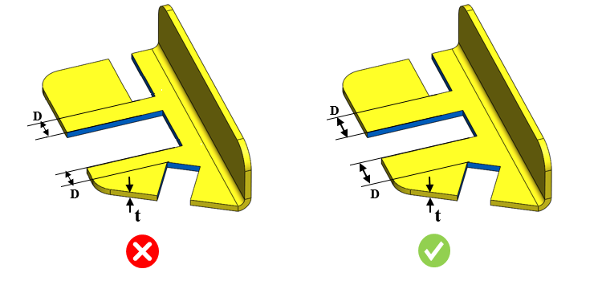

ノッチ間の最小距離と板厚との比は、ユーザーが指定した値以上である必要があります。
ノッチ加工とは、金属ストリップや部品の外周エッジから一部をせん断によって除去する加工です。ノッチ間の距離が極端に小さい場合、板金に歪みが生じる可能性があります。このような状況を避けるため、ノッチ間の最小距離と板厚との適切な関係を維持する必要があります。
この条件は、レーザー切断加工には適用されません。
一般的なガイドラインとして、ノッチ間距離と板厚との比は 2 以上であることが推奨されます。

ここでは、
D = 2つのノッチ間の距離
t = 板厚